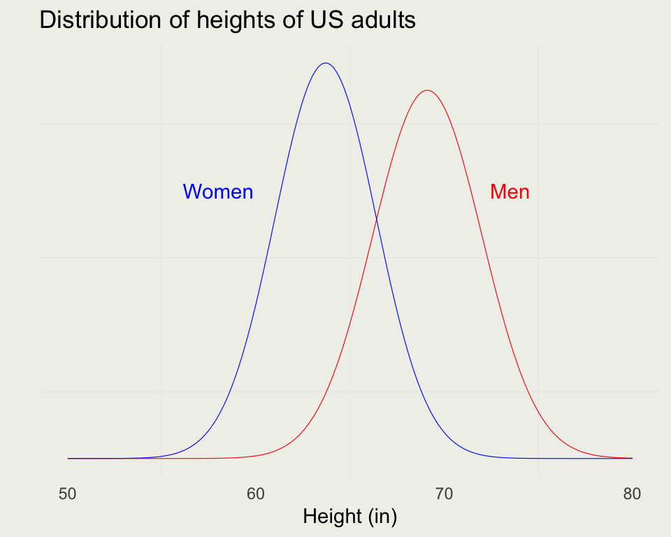

SMaC: Statistics, Math, and Computing
APSTA-GE 2006: Applied Statistics for Social Science Research
Random Variables are Not Random
It would be inconvenient to enumerate all possible events to describe a stochastic system
A more general approach is to introduce a function that maps sample space \(S\) onto the Real line
For each possible outcome \(s\), random variable \(X(s)\) performs this mapping
This mapping is deterministic. The randomness comes from the experiment, not from the random variable (RV)
While it makes sense to talk about \(\P(A)\), where \(A\) is an event, it does not make sense to talk about \(\P(X)\), but you can say \(\P(X(s) = x)\), which we usually write as \(\P(X = x)\)
Let \(X\) be the number of Heads in two coin flips. You flip the coin twice, and you get \(HH\). In this case, \(s = {HH}\), \(X(s) = 2\), while \(S = \{TT, TH, HT, HH\}\)
- Random variable \(X\) for the number of Heads in two flips

Geometric RV
- Geometric is a discrete waiting time distribution, and Exponential is its continuous analog
- If \(X\) is the number of failures before first success \(X \sim \text{Geometric}(\theta)\), where \(\theta\) is probability of success
- Example: We keep flipping a coin until we get success, say Heads
- Say we flip five times, which means we get the following sequence: T T T T H
- The probability of this sequence is: \((\frac{1}{2})^4 (\frac{1}{2})^1\)
- Notice this is the only way to get this sequence
- If \(x\) is the number of failures, the PMF is \(P(X = x) = (1 - \theta)^x \theta\), where \(x = 0, 1, 2, ...\)
- To check if this is a valid PMF, we need to sum over all \(x\):
\[ \begin{align} \sum_{x = 0}^{\infty} \theta (1 - \theta)^x = \theta \sum_{x = 0}^{\infty} (1 - \theta)^x \\ \text{Let } u = 1 - \theta \\ \theta \sum_{x = 0}^{\infty} u^x = \theta \frac{1}{1-u} = \theta \frac{1}{1-1 + \theta} = \frac{\theta}{\theta} = 1 \end{align} \]
- The last bit comes from geometric series for \(|u| < 1\)
- The probability of T T T H (x = 3 failures) when \(\theta = 1/2\), has to be \((1/2)^4\) or \(1/16\)
- If \(\theta = 1/3\), the probability of the same sequence has to be \((2/3)^3 \cdot 1/3 = 8/81\)
- The PMF is unbounded, but it converges to 1 as demonstrated before

Let’s consider the infinite geometric series:
\[ S = \sum_{x=0}^{\infty} u^x = u^0 + u^1 + u^2 + u^3 + \dots \] This can be written explicitly as: \[ S = 1 + u + u^2 + u^3 + \dots \]
Next, multiply the entire series by \(u\):
\[ uS = u \cdot (1 + u + u^2 + u^3 + \dots) \]
This results in: \[ uS = u + u^2 + u^3 + u^4 + \dots \]
Now, subtract the equation for \(uS\) from the equation for \(S\):
\[ S - uS = (1 + u + u^2 + u^3 + \dots) - (u + u^2 + u^3 + u^4 + \dots) \]
Notice that all terms on the right-hand side except the first term (which is 1) cancel out:
\[ S - uS = 1 \]
Factor the left-hand side:
\[ S(1 - u) = 1 \]
Finally, solve for \(S\):
\[ S = \frac{1}{1 - u} \]
Continuous RVs and the Uniform
- We leave the discrete world and enter continuous RVs
- We can no longer say, \(\P(X = x)\), since for a continuous RV \(\P(X = x) = 0\) for all \(x\)
- Instead of PMFs, we will be working with PDFs, and we get probability out of them by integrating over the region that we care about
- For a continuous RV: \(\int_{-\infty}^{\infty} f_X(x)\, dx = 1\)
\[ \begin{eqnarray} P(a < X < b) & = & \int_{a}^{b} f_X(x)\, dx \\ F_X(x) & = & \int_{-\infty}^{x} f_X(u)\, du \end{eqnarray} \]
Uniform \(X \sim \text{Uniform}(\alpha, \beta)\) has the following PDF:
\[ \text{Uniform}(x|\alpha,\beta) = \frac{1}{\beta - \alpha}, \, \text{where } \alpha \in \mathbb{R} \text{ and } \beta \in (\alpha,\infty) \]
- Your Turn: Guess the \(\E(X)\)
- Now derive \(\E(X)\) using the definition of the Expected Value: \(\E(X) = \int x f_X(x)\, dx\)

Normal RV
- \(X \sim \text{Normal}(\mu, \sigma)\) has the following PDF:
\[ \text{Normal}(x \mid \mu,\sigma) = \frac{1}{\sqrt{2 \pi} \ \sigma} \exp\left( - \, \frac{1}{2} \left( \frac{x - \mu}{\sigma} \right)^2 \right) \! \]
The bell shape comes from the \(\exp(-x^2)\) part
The expected value is \(\E(X) = \mu\), the mode (highest peak) and median are also \(\mu\).
Variance is \(\V(X) = \sigma^2\) and standard deviation \(\text{sd} = \sigma\)
A Normal RV can be converted to standard normal by subtracting \(\mu\) and dividing by \(\sigma\)
\[ \text{Normal}(x \mid 0, 1) \ = \ \frac{1}{\sqrt{2 \pi}} \, \exp \left( \frac{-x^2}{2} \right)\ \]

- Sums of small contributions tend to have a normal distribution
- Heights of people stratified by gender is a good example
- The following data come from “Teaching Statistics, A Bag of Tricks” by Gelman and Nolan
mu_m <- 69.1 # mean heights of US males in inches
sigma_m <- 2.9 # standard deviation for same
mu_w <- 63.7 # mean heights of US women in inches
sigma_w <- 2.7 # standard deviation of the same
x <- seq(50, 80, len = 1e3)
pdf_m <- dnorm(x, mean = mu_m, sd = sigma_m)
pdf_w <- dnorm(x, mean = mu_w, sd = sigma_w)
p <- ggplot(data.frame(x, pdf_m, pdf_w), aes(x, pdf_m))
p <- p + geom_line(size = 0.2, color = 'red') +
geom_line(aes(y = pdf_w), size = 0.2, color = 'blue') +
xlab("Height (in)") + ylab("") +
ggtitle("Distribution of heights of US adults") +
annotate("text", x = 73.5, y = 0.10, label = "Men", color = 'red') +
annotate("text", x = 58, y = 0.10, label = "Women", color = 'blue') +
theme(axis.text.y = element_blank(),
axis.ticks.y = element_blank())
print(p)
- The combined distribution is not Normal:
- You randomly sample a man from the population. What is \(\P(\text{Height}_m < 65)\)
- You randomly sample a woman from the population. What is \(\P(60 < \text{Height}_w < 70)\)
What is the probability that a randomly chosen man is taller than a randomly chosen woman?
We have two distributions \(M \sim \text{Normal}(\mu_m, \sigma_m)\) and \(W \sim \text{Normal}(\mu_w, \sigma_w)\). We want \(\P(M > W) = P(Z > 0),\, \text{where }Z = M - W\)
Sum of two normals is normal where both means and variances sum:
\[ \begin{eqnarray} Z & \sim & \text{Normal}(\mu_m + \mu_w,\, \sigma_m^2 + \sigma_m^2) \\ E(Z) & = & E(M - W) = E(M) - E(W) = 69.1 - 63.7 = 5.4 \\ \text{Var}(Z) & = & \text{Var}(M - W) = \text{Var}(M) + \text{Var}(W) = 2.9^2 + 2.7^2 = 15.7 \\ \text{sd} & = & \sqrt{Var} = \sqrt{15.7} =3.96 \\ Z & \sim & \text{Normal}(5.4, 3.96) \end{eqnarray} \]
- To figure out when \(Z > 0\), we can integrate the PDF from 0 to Infinity:
- We don’t have to integrate. We can evaluate the CDF instead:
By symmetry, the probability that a randomly chosen woman is taller than a randomly chosen man is 0.09
How can we check the analytic solution? We can do a simulation!
- Suppose you wanted to compute the variance this way. How would you do it?